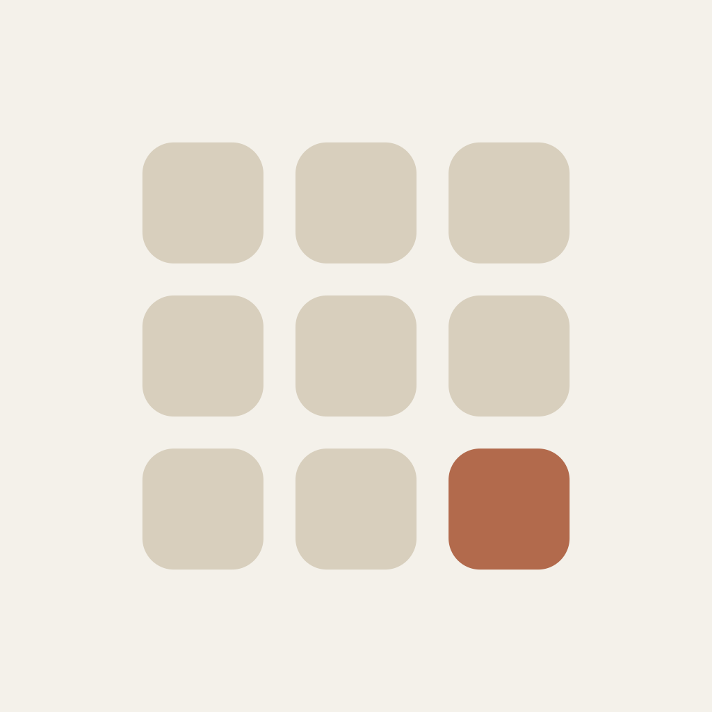
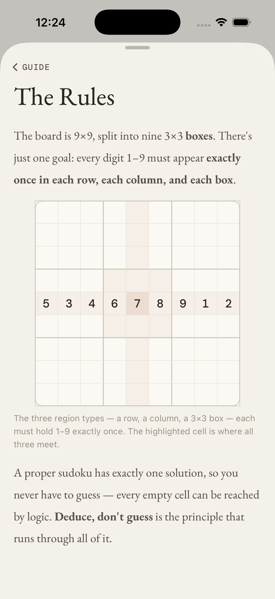
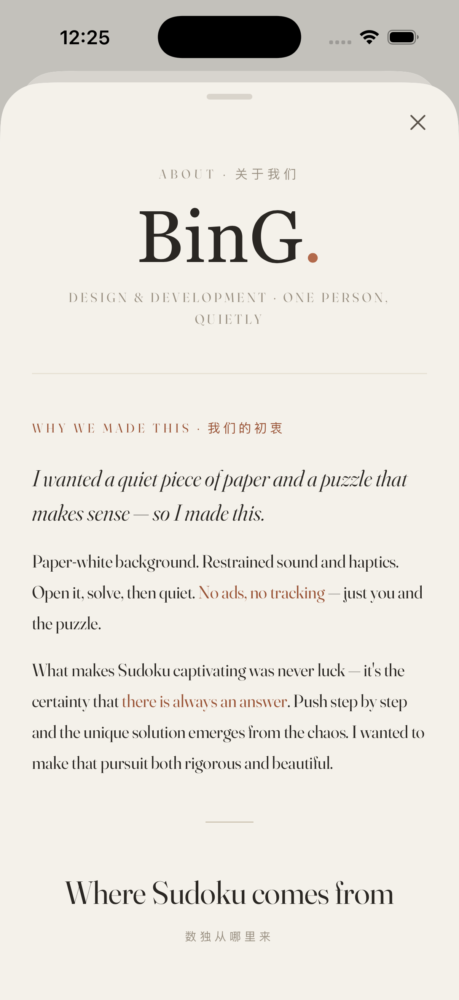
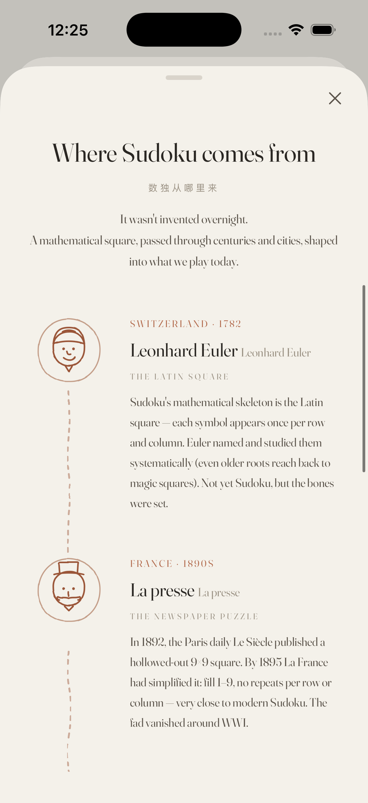

Web Prototype + SwiftUI / iOS 17+
One person, one purpose.
凡事有解。
Every puzzle has an answer.


想要一张安静的纸——
打开就解，解完安静下来。
市场上的数独 App，不是广告轰炸，就是功能堆砌，视觉嘈杂。
我想要的，是一张安静的纸——像高质纸上印的题目一样干净，打开就解，解完安静下来。没有广告、没有追踪、没有干扰，只有你和这一局。
于是从一个纯粹的个人需求出发，一个人，从网页原型到 SwiftUI，把它做了出来。
是一种设计
克制不是极简主义的标榜，而是每一个设计决定都指向同一个目标：让人专注于解题。
整个 App 在任意时刻只用一种莫兰迪信号色，且只用在真正需要注意力的地方。
题目数字用棕黑（ink），用户输入用钢笔蓝（pen）——视觉即交流，无需额外标注。
每条开关的说明都认真斟酌，说清"这个开关到底是什么"。语言的精准，本身就是设计。
一套纸感的色与字：暖黄白的纸、深棕的墨、钢笔蓝的笔迹，和一抹可切换的莫兰迪信号色。衬线负责"印"，等宽负责"仪表"。

这就是当初验证设计用的单文件网页原型——纯手写 HTML / CSS / JS，零依赖。切换字体三声、网格层级、报纸题签三个开关，看同一块棋盘如何在细节里呼吸。
从主棋盘到设置、规则、宣言、分享——每一屏都遵循同一套克制的语言。





不是说教，是手把手
裸单、隐单、裸对、区块指向、X-Wing——5 种解题技法的步骤式讲解：动态高亮棋盘对应格子 + 底部卡片讲解，可拖拽展开收起，不打断解题流。新手教程与 AI 导师共用同一视觉通道，代码零重复。

七道世界级残局，引擎校验
AI Escargot、Inkala、Golden Nugget……收录世界公认最难的残局，配 Sudoku Exchange 公开题库（SE 五档评级），每题都经引擎唯一解校验。高手模式下不限错误、不标红、不高亮——填满才判断，"Deduce, don't guess."

最简单的，往往最优雅
输出一段纯文本口令，朋友粘贴后即可还原同一局棋盘，从头挑战。无需服务器、无需账号——任何时代都能用，不依赖服务、不怕下线。
凡事，有解。
没有团队、没有融资、没有路线图会议。一个人，从一张空白的纸开始，把每一个设计决定都想清楚，再安静地写下来。Every puzzle has an answer.